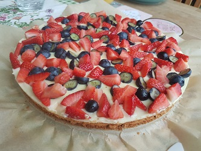
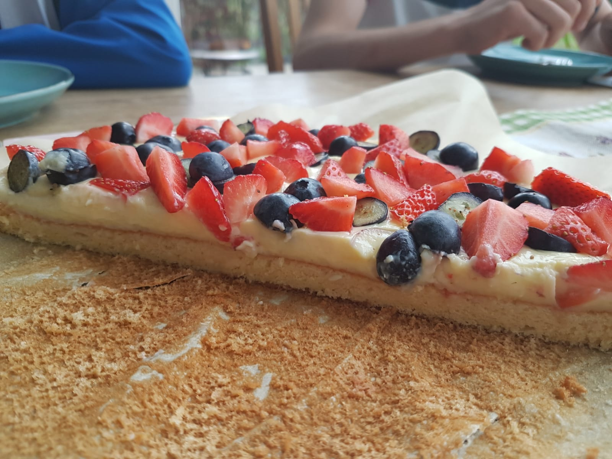

zurück
Obst-Puddingkuchen
Zubereitungszeit: 40 min

1 schneller Kuchenboden
500 ml Vanillepudding
Frische Früchte
Einen Kuchenboden backen backen
Vanillepudding kochen, Früchte schneiden
Kuchenboden mit Pudding begießen, gleichmäßig verteilen
Mit Früchten belegen
